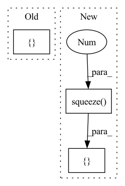

Pattern ID :613
Before Change
m, x_rnn, h_erb = self.erb_stage(feat_erb)
spec = self.mask(spec, m, atten_lim) // [B, 1, T, F, 2]
lsnr, _ = self.lsnr_net(x_rnn)
out_specs = [ specAfter Change
m, x_rnn, h_erb = self.erb_stage(feat_erb)
spec = self.mask(spec, m, atten_lim) // [B, 1, T, F, 2]
lsnr, _ = self.lsnr_net(x_rnn)
out_specs = [ spec.squeeze(1 ) ] * (len(self.refinement_stages) + 1)
// re/im into channel axis
spec_f = spec.squeeze(1)[:, :, : self.df_bins].permute(0, 3, 1, 2) // [B, 2, T, F_df]
h_conv: Optional[Tensor] = NoneIn pattern: SUPERPATTERN
Frequency: 3
Non-data size: 3
Instances Fragment ID: 2287202
Project Name: rikorose/deepfilternet
Commit Name: 2aacf4d049fc9e7b073c15d705c60f87f3d554f7
Time: 2022-04-12
Author: h.schroeter@pm.me
File Name: DeepFilterNet/df/multistagenet.py
M Class Name: MSNet
N Class Name: MSNet
M Method Name: forward(5)
N Method Name: forward(5)
M Parent Class: nn.Module
N Parent Class: nn.Module
M File Name: DeepFilterNet/df/multistagenet.py
N File Name: DeepFilterNet/df/multistagenet.py
M Start Line: 471
M End Line: 477
N Start Line: 471
N End Line: 480
Before Change
time_points = time_sequence[time_index] // t in SEFT paper
pe_ = self.pos_encoder(time_points.unsqueeze(1)).squeeze(1)
variable = nonzero_index[:,1] // the dimensions of variables. The m value in SEFT paper.
unit = torch.cat([ pe_, values.unsqueeze(1), variable.unsqueeze(1)After Change
// variable_ = self.linear_sensor(variable.float().unsqueeze(1)).squeeze(1)
Nonlinear transformation // AUROC ~0.8
values_ = F.relu(self.linear_value(values.float().unsqueeze(1))).squeeze(1 )
// variable_ = F.relu(self.linear_sensor(variable.float().unsqueeze(1))).squeeze(1)
unit = torch.cat([ pe_, values_, variable_ Fragment ID: 2287200
Project Name: mims-harvard/raindrop
Commit Name: 20c471dc33bc76d29c2dd0a6c93b05529095cadf
Time: 2021-09-06
Author: xiang.alan.zhang@gmail.com
File Name: code/baselines/models.py
M Class Name: SEFT
N Class Name: SEFT
M Method Name: forward(5)
N Method Name: forward(5)
M Parent Class: nn.Module
N Parent Class: nn.Module
M File Name: code/baselines/models.py
N File Name: code/baselines/models.py
M Start Line: 278
M End Line: 284
N Start Line: 299
N End Line: 322
Before Change
output, stop_token, attention = self.decode(inputs, mask)
outputs += [output]
attentions += [attention]
stop_tokens += [ stop_tokenAfter Change
output, stop_token, attention = self.decode(inputs, mask)
outputs += [output]
attentions += [attention]
stop_tokens += [ stop_token.squeeze(1 ) ]
t += 1
return self._parse_outputs(outputs, attentions, stop_tokens)
Fragment ID: 2287199
Project Name: coqui-ai/tts
Commit Name: e83a4b07d2558a25b0ad84dea642385a61660bd6
Time: 2019-10-28
Author: egolge@mozilla.com
File Name: layers/tacotron.py
M Class Name: Decoder
N Class Name: Decoder
M Method Name: forward(5)
N Method Name: forward(5)
M Parent Class: nn.Module
N Parent Class: nn.Module
M File Name: layers/tacotron.py
N File Name: layers/tacotron.py
M Start Line: 441
M End Line: 441
N Start Line: 440
N End Line: 440